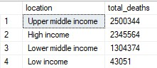

COVID-19 Data Exploration Project
In this project I use SQL server to explore worldwide COVID-19 data from ourwordlindata.org . The data was imported into Microsoft SQL Server Management Studio. In SSMS I worked on manipulating and managing the data to retrieve interesting output. To see the SQL code you can click here. In order to see the visualitation look at my Tabblau project.
The steps I took:
- Downloading the worldwide covid data from ourwordlindata.org
- Creating a database in Microsfot SQL Server Managment Studio and importing the 2 tables CovidDeaths and CovidVaccinations.
- Cleaning the data by removing null values and converting the dataTypes where needed.
- Looking at the tables and trying to find interesting data from it.
- Writing SQL queries using the following Skills: Joining tables, Using Common Table Expressions (CTE's), Windows Functions, Aggregate Functions, Creating Views, Converting Data Types.
- Checking the results of the queries against other databases and recourses such as the Data Repository by the Center for Systems Science and Engineering (CSSE) at Johns Hopkins University and the data provided from Rijksoverheid.
Some interesting data I found:
- When looking at the vaccination degree of countries, I found that Gibraltar had a vaccination degree of 122%. When checking with other sources I found this:
The population of gibraltar according to the Worldbank is 33.691. A simple calculation would show that according to the data the vaccination degree indeed is 122.9%. Further research would be needed to explain this percentage. -
Looking at the deaths with regards to the income levels, I expected to see a high number for the Low Income group and the Lower middle income group.
The reason for this is that I believed that those people were more vulnerable and had less recourses to protect themselves with. However, this is what the output of the data was:

One could argue that the reason for this, is that developed countries have better means to indicate deaths and relate them to COVID.